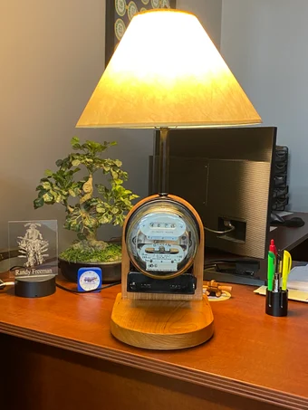
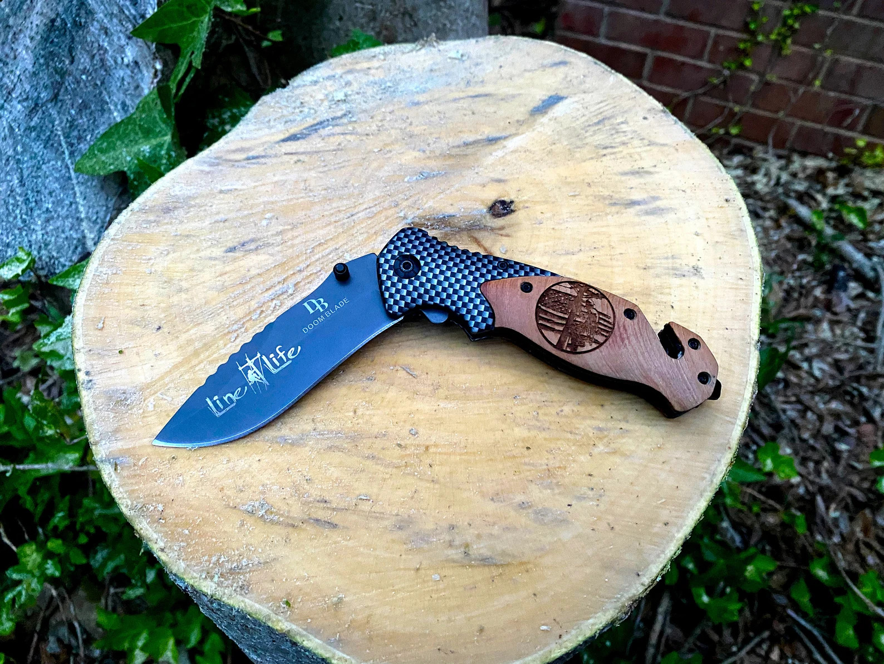
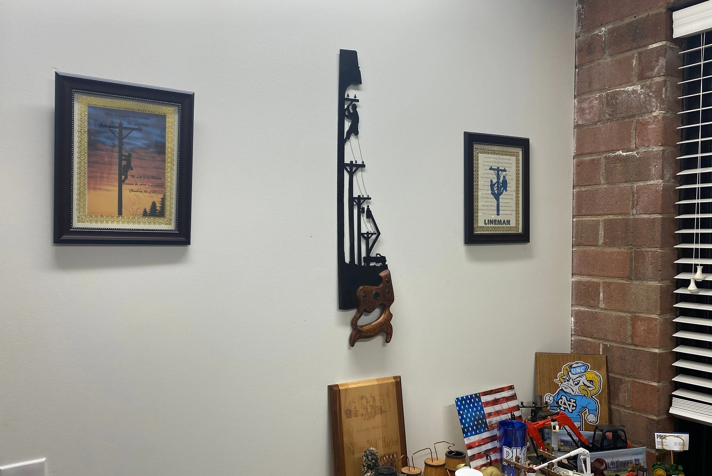
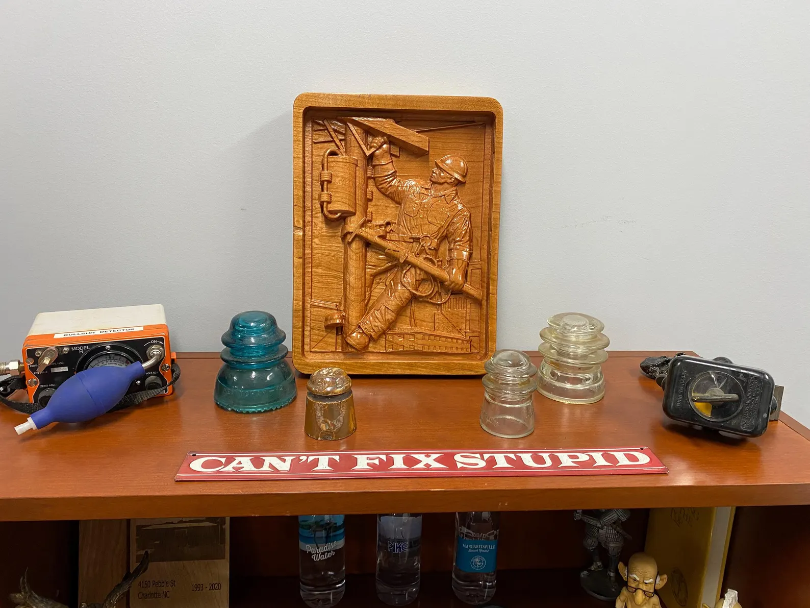
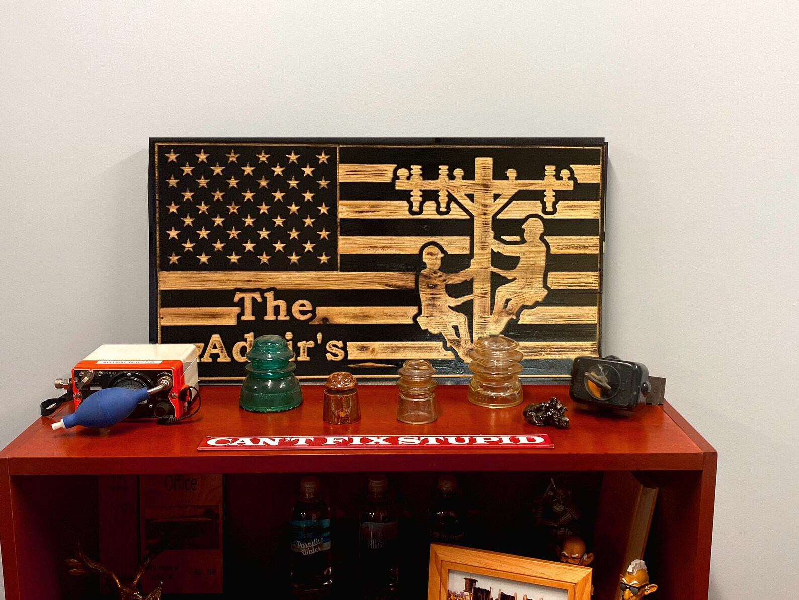
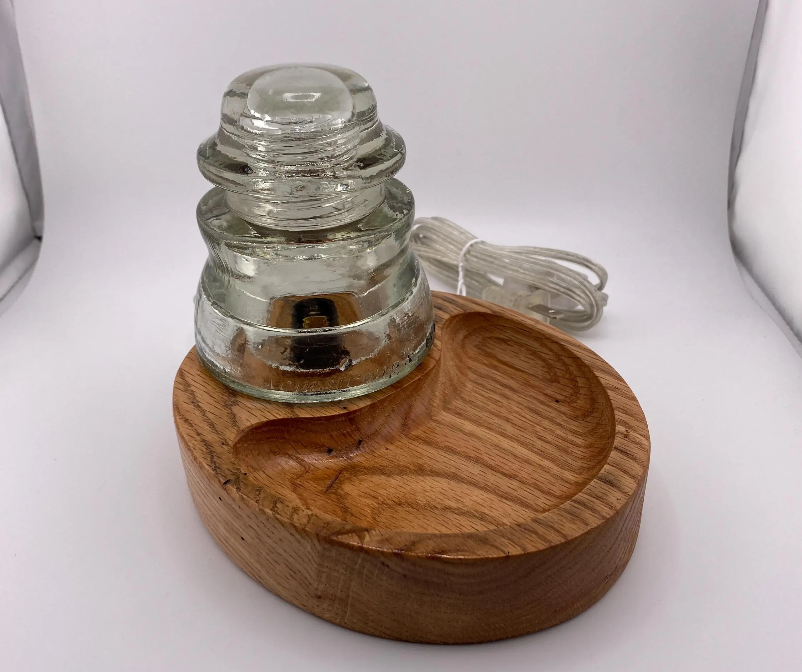
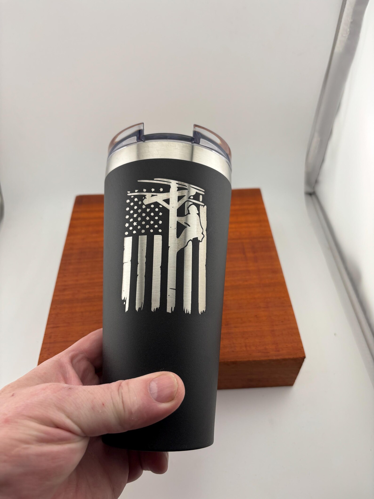
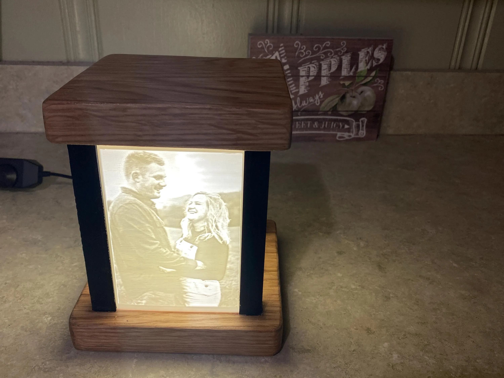

DALLAS, NORTH CAROLINA / BUILT WITH PURPOSE
Good ideas.
Great tools.
Made real.
From your next laser-cut box to a one-of-a-kind gift. Explore maker tools, step into the workshop, and discover what’s possible.
DESIGN IT. CUT IT. MAKE IT YOURS.
01 / MAKE IT YOURSELF
Your box.
Your dimensions.
Your next build.
Create finger-joint designs for your laser cutter with Jack’s Box & Frame Generator. Set your dimensions and material thickness, fine-tune the fit, and export your cutting files.
Open the laser-cut box generator ↗Dial in the fit
Custom dimensions, material thickness, finger joints, and kerf adjustment.
Build around your idea
Lid options, hinges, dividers, and lift-out compartment trays.
Take it to the laser
Explore the 3D preview, then export SVG or DXF cutting files.
02 / HANDCRAFTED BY JACK
From the shop.
Wood, metal, and a personal touch. Visit each Etsy listing for current prices, options, and availability.

View on Etsy ↗LIGHTING
Rustic Vintage Meter Lamp

View on Etsy ↗PERSONALIZED GIFTS
Engraved Lineman Knife

View on Etsy ↗METALWORK
Rustic Metal Wall Sign

View on Etsy ↗WOODWORK
3D Relief Carve

View on Etsy ↗WOODWORK
Rustic Wood Flag

View on Etsy ↗LIGHTING
Glass Insulator Nightlight Catchall Tray

View on Etsy ↗LASER ENGRAVING
Custom Engraved Tumbler

View on Etsy ↗PERSONALIZED GIFTS
Light-Up Memory Box
03 / STEP INTO THE WORKSHOP
There’s always
something to make.
Follow Jack In The Shop on YouTube and keep the inspiration going beyond the finished piece.
Visit the YouTube channel ↗
A MAKER. A WORKSHOP. A LOT OF POSSIBILITIES.
Hey, I’m Jack.
Here in North Carolina, I bring traditional woodworking and modern laser technology together to create personalized wood and metal pieces. Every project is a chance to turn an idea into something you can hold, use, or give.
More about the shop ↗Existing project photos ↗04 / LET’S BUILD SOMETHING PERSONAL
Have an idea?
Bring it to the bench.
Custom engraving, personalized gifts, and corporate or bulk orders. Tell Jack what you have in mind.